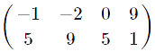
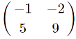
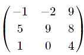
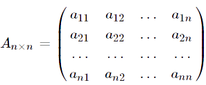
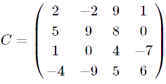
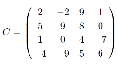
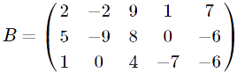

«Матрицы. Виды матриц. Основные термины.»
Виды матриц в зависимости от их размера. Главная и побочная диагонали. След матрицы.
Пусть задана некая матрица Am×n. Если m=1(матрица сосстоит из одной строки), то заданную матрицу называют матрица-строка. Если же n=1 (матрица состоит из одного столбца), то такую матрицу называют матрица-столбец.
Если для матрицы Am×n верно условие m≠n (т.е. количество строк не равно количеству столбцов), то часто говорят, что A - прямоугольная матрица. Например, матрица  имеет размер 2×4, т.е. содержит 2 строки и 4 столбца. Так как количество строк не равно количеству столбцов, то эта матрица является прямоугольной.
Если для матрицы Am×n верно условие m=n (т.е. количество строк равно количеству столбцов), то говорят, что A – квадратная матрица порядка n. Например,  – квадратная матрица второго порядка;  – квадратная матрица третьего порядка.
В общем виде квадратную матрицу Am×n верно условие m=n можно записать так: 
Например, для матрицы  имеем:

Элементы c11=2, c22=9, c33=4, c44=6 являются главными диагональными элементами; элементы c14=1, c23=8, c32=0, c41=-4 – побочные диагональные элементы.
Например, для матрицы  имеем: TrC = 2+9+4+6=21.
Понятие диагональных элементов используется также и для неквадратных матриц. Например, для матрицы  главными диагональными элементами будут b11=2, b22=-9, b33=4 .